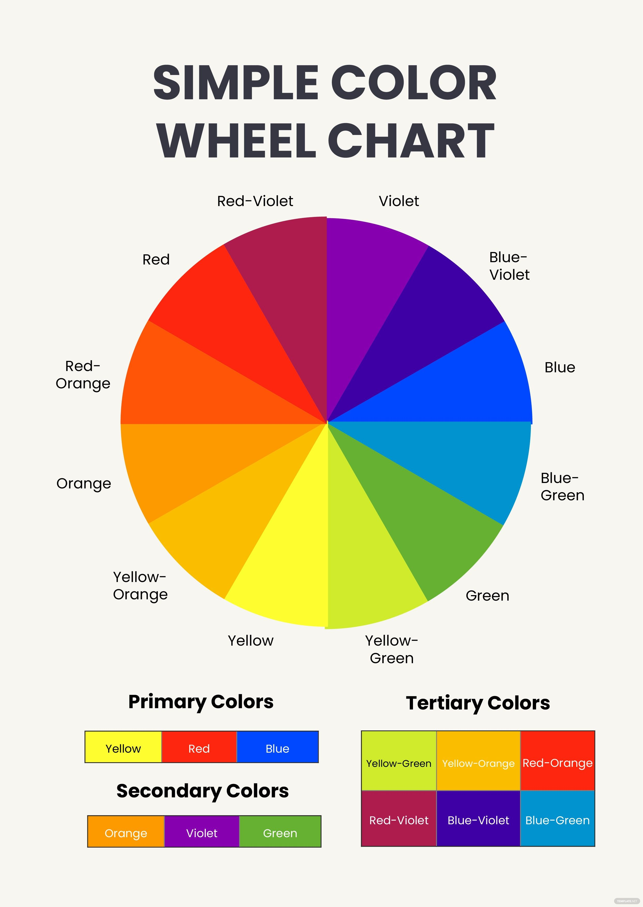

Colour theory serves as the foundational framework underpinning the fundamental principles and regulations governing the world of colour and its application in crafting visually appealing compositions.
Grasping the fundamentals of colour theory enables individuals to dissect the organized essence of colour, empowering them to craft and employ colour palettes with a deliberate and tactical approach.
The colour wheel is a visual representation of colours, with hues arranged according to wavelength.
Colour wheels allow colour relationships to be represented geometrically, and show the relationship between primary, secondary and tertiary colours.

Red, blue, and yellow are primary colours— and they can't be created through mixing colours. Mix them all together and you get brown. But mix them and you can create all other colours.
Colour theory also involves a colour's darkness or lightness, or colour values.
Also, colour theory involves how you arrange colours together to create schemes.